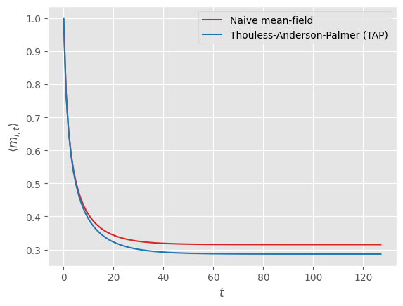

Spin-Model Transformers: A Physics-Inspired Class of Transformer Modules
Exploring connections between transformer neural networks, spin models, and (non-)equilibrium statistical mechanics

1. Introduction
✨ This is a work in progress. Implementations in JAX of the content outlined in this post should become available at
mcbal/spin-model-transformers. Come join the fun if you’d like to see things moving.
In a series of previous blog posts, we have tried to connect the forward pass of a transformer neural-network module to computing mean magnetizations in disordered Ising-like vector-spin models with parametrized couplings and external magnetic fields. In this picture, the forward pass of a transformer module computes statistical observables given a specific realization of quenched couplings and external magnetic fields while the backward pass nudges the parametrized couplings and external magnetic fields to better respond to the demands of the training loss.
Both the mean-field message-passing approach of Deep Implicit Attention: A Mean-Field Theory Perspective on Attention Mechanisms and the saddle-point free-energy approach of Transformers from Spin Models: Approximate Free Energy Minimization rely on methods that are only well-defined for spin models with symmetric coupling matrices, whose stochastic dynamics obey detailed balance and converge to a steady-state equilibrium characterized by the Boltzmann distribution. The softmax attention operation in transformer modules is however famously asymmetric.
To capture spin models with asymmetric coupling matrices, we had better consider non-equilibrium systems, whose dynamics can be pretty wild yet sometimes lead to a relaxation to a non-equilibrium steady state. In the last few decades, dynamical mean-field approaches have been developed for the binary kinetic Ising model, which exhibits non-equilibrium behavior when couplings are asymmetric or when model parameters are subject to rapid changes. In this post, we try to generalize one of these approaches from binary spins to vector spins with the aim of comparing the resulting equations for the mean magnetizations to the forward pass of a transformer module.
2. Mean-field theory of asymmetric Ising models with binary spins
In this section, we review known results on mean-field theory approaches to capturing the stochastic dynamics of binary kinetic Ising models. We primarily follow the discussion outlined in A unifying framework for mean-field theories of asymmetric kinetic Ising systems (Aguilera et al., 2021).
2.1. Setting the scene: the kinetic Ising model
We consider a kinetic Ising model describing a system made up of $N$ interacting binary spins $s_{i,t} \in \{-1, 1\}$ that evolve in discrete time steps $t$ according to synchronous dynamics, i.e. all spins get updated at the same time in parallel. Given a spin configuration $\mathbf{s}_{t-1} = \{ s_{1,t-1}, s_{2,t-1}, \ldots, s_{N,t-1} \}$ at time $t-1$, we consider the spins $\mathbf{s}_{t}$ at time $t$ to be conditionally independent random variables captured by a discrete-time Markov chain transition probability
\begin{equation} P( \mathbf{s}_{t} \vert \mathbf{s}_{t-1} ) = \prod_{i=1}^{N} \frac{\mathrm{e}^{s_{i,t} h_{i,t}}}{\sum_{s_{i,t}} \mathrm{e}^{s_{i,t} h_{i,t}}} = \prod_{i=1}^{N} \frac{\mathrm{e}^{s_{i,t} h_{i,t}}}{2 \cosh h_{i,t}}, \label{eq:pcond} \end{equation}
where the effective external field is given by
\begin{equation} h_{i,t} = x_{i,t} + \sum_{j=1}^{N} J_{ij} s_{j,t-1}. \end{equation}
Here, the parameters $\mathbf{x}$ represent the (possibly time-dependent) local external fields at each site while the coupling parameters $\mathbf{J}$ are a specific realization of quenched disorder encoding the interactions between pairs of spins. Using the probability mass function of the previous state $P( \mathbf{s}_{t-1} )$ we can write the distribution of the current state as
\begin{equation} P( \mathbf{s}_{t} ) = \sum_{\mathbf{s}_{t-1}} P( \mathbf{s}_{t} \vert \mathbf{s}_{t-1} ) P( \mathbf{s}_{t-1} ), \label{eq:marginal} \end{equation}
which, when applied recursively, traces the evolution of the system starting from some initial distribution $P( \mathbf{s}_{0} )$. Unless we turn off the couplings by setting $\mathbf{J} = \mathbf{0}$, the marginal distribution $P( \mathbf{s}_{t} )$ is not factorized and tends to be quite complicated. Our goal is to compute statistical properties of the system, such as the mean magnetizations
\begin{equation} m_{i,t} = \sum_{\mathbf{s}_{t}} s_{i,t} P( \mathbf{s}_{t} ), \end{equation}
as well as correlations
\begin{equation} C_{ik,t} = \sum_{\mathbf{s}_{t}} s_{i,t} s_{k,t} P( \mathbf{s}_{t} ) - m_{i,t} m_{k,t}, \end{equation}
and delayed correlations
\begin{equation} D_{il,t} = \sum_{\mathbf{s}_{t},\mathbf{s}_{t-1}} s_{i,t} s_{l,t-1} P( \mathbf{s}_{t}, \mathbf{s}_{t-1} ) - m_{i,t} m_{l,t-1}. \end{equation}
Since the above expressions involve summing over a large amount of possible spin configurations, they are not very useful in practice. So we will try to approximate the tricky marginal distribution $P( \mathbf{s}_{t} )$ defined in Eq. \eqref{eq:marginal} using a mean-field theory approach.
2.2. Mean-field approximation
Mean-field theory tries to approximate a complicated object ${\color{red}P}$ by wiggling around the parameters of a simple, analytically tractable parametrized ansatz ${\color{green}Q_{\theta}}$ to get as close as possible to ${\color{red}P}$. At risk of inducing headaches in mathematicians by calling everything a manifold, we can picture what’s going on geometrically as trying to approximate a target probability distribution $P( \mathbf{s}_{t} \vert \mathbf{x}, \mathbf{J})$ and its statistical properties $\mathbf{m}_{t}$, $\mathbf{C}_{t}$, and $\mathbf{D}_{t}$ by restricting ourselves to a submanifold of tractable probability distributions. A particularly convenient submanifold is that of factorized models, where each point on the submanifold corresponds to a distribution parametrized by a vector $\boldsymbol{\theta}_{t}$,
\begin{equation} Q( \mathbf{s}_{t} \vert \boldsymbol{\theta}_{t} ) = \prod_{i=1}^{N} \frac{\mathrm{e}^{s_{i,t} \theta_{i,t}}}{2 \cosh \theta_{i,t}}, \label{eq:q} \end{equation}
so that the mean magnetizations are simply given by
\begin{equation} m_{i,t} = \tanh \theta_{i,t} \end{equation}
as there are no couplings between spins. The factorized model $Q( \mathbf{s}_{t} \vert \boldsymbol{\theta}^{*}_{t} )$ that minimizes the Kullback-Leibler (KL) divergence
\begin{equation} D_{\mathrm{KL}} ({\color{red}P}\vert\vert{\color{green}Q_{\theta}}) = \sum_{\mathbf{s}_{t}} P( \mathbf{s}_{t}) \log \frac{P( \mathbf{s}_{t})}{Q_{\theta}( \mathbf{s}_{t})} \label{eq:kl} \end{equation}
has mean magnetizations $\mathbf{m}_{t}$ identical to those of the target distribution $P( \mathbf{s}_{t})$ since, for all spins $i=1,2,\ldots,N$, we find that
\begin{align} \frac{\partial D_{\mathrm{KL}} ({\color{red}P}\vert\vert{\color{green}Q_{\theta}}) }{\partial \theta_{i, t}} \Biggr\rvert_{\boldsymbol{\theta}_{t}=\boldsymbol{\theta}^{*}_{t}} &= - \sum_{\mathbf{s}_{t}} P( \mathbf{s}_{t}) \frac{\partial \log Q_{\theta}( \mathbf{s}_{t}) }{\partial \theta_{i, t}} \Biggr\rvert_{\boldsymbol{\theta}_{t}=\boldsymbol{\theta}^{*}_{t}} \\ &= - \sum_{\mathbf{s}_{t}} s_{i,t} P( \mathbf{s}_{t}) + \tanh \theta^{*}_{i,t} \\ &= -m^{{\color{red}P}}_{i,t} + m^{{\color{green}Q_{\theta^{*}}}}_{i,t} = 0, \label{eq:klm} \end{align}
where $m^{{\color{red}P}}_{i,t}$ and $m^{{\color{green}Q_{\theta^{*}}}}_{i,t}$ respectively denote the expectation values of $s_{i,t}$ with respect to ${\color{red}P}$ and ${\color{green}Q_{\theta^{*}}}$. Indeed, minimizing $D_{\mathrm{KL}} ({\color{red}P}\vert\vert{\color{green}Q_{\theta}})$ tries to cover the modes of ${\color{red}P}$ by moment matching since the expectation value in Eq. \eqref{eq:kl} is calculated with respect to ${\color{red}P}$.
2.3. The Plefka expansion
Great, but is it even possible to find the parameters
\begin{equation} \DeclareMathOperator*{\argmin}{arg\,min} \boldsymbol{\theta}^{*}_{t} = \argmin_{\boldsymbol{\theta}_{t}} \left( - \sum_{\mathbf{s}_{t}} P( \mathbf{s}_{t}) \log Q( \mathbf{s}_{t}) \right) \end{equation}
that minimize the KL divergence? Well, that’s going to be hard, unless you already know the target distribution $P( \mathbf{s}_{t})$, or you have a clever way of approximately evaluating the expectation value of $\log {\color{green}Q_{\theta}}$ with respect to ${\color{red}P}$. So let’s introduce some more distributions to get around this issue. To apply the Plefka expansion to our problem, we introduce the conditional distribution
\begin{equation} P_{\alpha}( \mathbf{s}_{t}\vert \mathbf{s}_{t-1} ) = \prod_{i=1}^{N} \frac{\mathrm{e}^{s_{i,t} h_{i,t}(\alpha) }}{2 \cosh h_{i,t}(\alpha)}, \label{eq:pcondalt} \end{equation}
\begin{equation} h_{i,t}(\alpha) = (1-\alpha) \theta_{i,t} + \alpha \left( x_{i,t} + \sum_{j=1}^{N} J_{ij} s_{j,t-1} \right), \label{eq:pcondalth} \end{equation}
parametrized by a scalar $\alpha$ interpolating between $P_{\alpha=0}( \mathbf{s}_{t} \vert \mathbf{s}_{t-1} ) = Q( \mathbf{s}_{t} \vert \boldsymbol{\theta}_{t} )$ (Eq. \eqref{eq:q}) and $P_{\alpha=1}( \mathbf{s}_{t} \vert \mathbf{s}_{t-1} ) = P( \mathbf{s}_{t} \vert \mathbf{s}_{t-1} )$ (Eq. \eqref{eq:pcond}). Using Eq. \eqref{eq:pcondalt}, we can construct an approximate marginal distribution $P_{\alpha}( \mathbf{s}_{t})$, leading to $\alpha$-dependent statistical properties $\mathbf{m}_{t}(\alpha)$, $\mathbf{C}_{t}(\alpha)$, and $\mathbf{D}_{t}(\alpha)$ for the approximate system. The Plefka expansion then boils down to writing these properties as Taylor series expansions around the factorized model $\alpha=0$. For the mean magnetizations, the expansion up to $n$-th order looks like
\begin{equation} \mathbf{m}_{t}(\alpha) = \mathbf{m}_{t}(\alpha=0) + \sum_{k=1}^{n} \frac{\alpha^k}{k!} \frac{\partial^{k} \mathbf{m}_{t}(\alpha=0)}{\partial \alpha^{k}} + \mathcal{O}(\alpha^{n+1}), \label{eq:mtaylor} \end{equation}
where all coefficients in the expansion are functions of $\boldsymbol{\theta}_{t}$ via Eq. \eqref{eq:pcondalth}. The mean-field approximation is computed by setting $\alpha=1$ so that the original marginal distribution is recovered and Eq. \eqref{eq:klm} holds, which implies that $\mathbf{m}_{t}(\alpha=1) = \mathbf{m}_{t}(\alpha=0)$ and thus
\begin{equation} \sum_{k=1}^{n} \frac{1}{k!} \frac{\partial^{k} \mathbf{m}_{t}(\alpha=0)}{\partial \alpha^{k}} + \mathcal{O}(\alpha^{n+1}) = 0. \label{eq:mftheta} \end{equation}
Finally, we solve Eq. \eqref{eq:mftheta} for $\boldsymbol{\theta}_{t}$ to find the mean-field values $\boldsymbol{\theta}^{*}_{t}$ of the parameters of the distribution Eq. \eqref{eq:q}. Physically, we are tuning the effective external magnetic fields of the factorized ansatz to $\boldsymbol{\theta}^{*}_{t}$ so that its approximate mean magnetizations get as close as possible to the real ones.
2.4. Recovering naive mean-field and Thouless-Anderson-Palmer approximations
We now consider first and second order approximations of the mean magnetizations Eq. \eqref{eq:mtaylor} to recover respectively the naive mean-field and Thouless-Anderson-Palmer (TAP) approximations for the binary kinetic Ising model. The starting point is a Plefka expansion around factorized models at times $t-1$ and $t$. From Eq. \eqref{eq:marginal} and Eq. \eqref{eq:pcondalt}, we construct a marginal probability distribution
\begin{equation} P^{[t-1:t]}_{\alpha}( \mathbf{s}_{t} ) = \sum_{\mathbf{s}_{t-1},\mathbf{s}_{t-2}} P_{\alpha}( \mathbf{s}_{t} \vert \mathbf{s}_{t-1} ) P_{\alpha}( \mathbf{s}_{t-1} \vert \mathbf{s}_{t-2} ) P( \mathbf{s}_{t-2} ), \end{equation}
interpolating between $P^{[t-1:t]}_{\alpha=0}( \mathbf{s}_{t} ) = Q( \mathbf{s}_{t} )$ and $P^{[t-1:t]}_{\alpha=1}( \mathbf{s}_{t} ) = P( \mathbf{s}_{t} )$. The corresponding mean magnetizations are
\begin{align} m_{i,t}(\alpha) &= \sum_{\mathbf{s}_{t},\mathbf{s}_{t-1},\mathbf{s}_{t-2}} s_{i,t} \, P_{\alpha}( \mathbf{s}_{t} \vert \mathbf{s}_{t-1} ) P_{\alpha}( \mathbf{s}_{t-1} \vert \mathbf{s}_{t-2} ) P( \mathbf{s}_{t-2} ) \\ &= \sum_{\mathbf{s}_{t-1},\mathbf{s}_{t-2}} \tanh h_{i,t}(\alpha) \, P_{\alpha}( \mathbf{s}_{t-1} \vert \mathbf{s}_{t-2} ) P( \mathbf{s}_{t-2} ) \end{align}
Following Eq. \eqref{eq:mftheta}, the first-order approximation should satisfy
\begin{equation} \frac{\partial m_{i,t}(\alpha=0)}{\partial\alpha} = \left( 1-m^{2}_{i,t} \right) \left( -\theta_{i,t} + x_{i,t} + \sum_{j} J_{ij} m_{j,t-1} \right) = 0, \end{equation}
so that $\theta^{*}_{i,t} = x_{i,t} + \sum_{j} J_{ij} m_{j,t-1}$ and we end up with the naive mean-field equations
\begin{equation} m_{i,t} \approx \tanh \theta^{*}_{i,t} = \tanh \left( x_{i,t} + \sum_{j} J_{ij} m_{j,t-1} \right). \label{eq:naivem} \end{equation}
Again following Eq. \eqref{eq:mftheta}, the second-order approximation should satisfy
\begin{equation} \frac{\partial m_{i,t}(\alpha=0)}{\partial\alpha} + \frac{1}{2} \frac{\partial^{2} m_{i,t}(\alpha=0)}{\partial^{2}\alpha} = 0, \end{equation}
where the second-order derivative, neglecting terms higher than $\mathcal{O}(\alpha^2)$, is
\begin{equation} \frac{\partial^{2} m_{i,t}(\alpha=0)}{\partial^{2}\alpha} \approx -2 m_{i,t} \left( 1-m^{2}_{i,t} \right) \sum_{j} J^{2}_{ij} \left( 1-m^{2}_{j,t-1} \right) \end{equation}
so that
\begin{equation} \theta^{*}_{i,t} = x_{i,t} + \sum_{j} J_{ij} m_{j,t-1} - m_{i,t} \sum_{j} J^{2}_{ij} \left( 1-m^{2}_{j,t-1} \right) \end{equation}
and we end up with the TAP mean-field equations
\begin{equation} m_{i,t} \approx \tanh \left( x_{i,t} + \sum_{j} J_{ij} m_{j,t-1} - m_{i,t} \sum_{j} J^{2}_{ij} \left( 1-m^{2}_{j,t-1} \right) \right). \label{eq:tapm} \end{equation}
We refer to (Aguilera et al., 2020) for full derivations and variations of the above mean-field results as well as variations based on different approximations of the marginal distribution $P( \mathbf{s}_{t} )$. The mean-field equations obtained above can also be elegantly derived using a Legendre transformation of the generating functional of the set of trajectories of the model, as outlined in e.g. Dynamical TAP equations for non-equilibrium Ising spin glasses (2011). It is also possible to derive second-order TAP approximations of the correlations
\begin{equation} C_{ik,t} \approx \begin{cases} 1 - m^{2}_{i,t} & i = k \\ \left( 1-m^{2}_{i,t} \right) \left( 1-m^{2}_{k,t} \right) \sum_{j} J_{ij} J_{kj} \left( 1-m^{2}_{j,t-1} \right) & i \neq k \label{eq:tapc} \end{cases} \end{equation}
and delayed correlations
\begin{equation} D_{il,t} \approx J_{il} \left( 1-m^{2}_{i,t} \right) \left( 1-m^{2}_{l,t-1} \right) \left( 1 + 2 J_{il} m_{i,t} m_{l,t-1} \right). \label{eq:tapd} \end{equation}
In summary, given the mean magnetizations $\mathbf{m}_{t-1}$ of the system at time $t-1$, we can use equations \eqref{eq:tapm} \eqref{eq:tapc} \eqref{eq:tapd} to compute a tuple $(\mathbf{m}_{t},\mathbf{C}_{t},\mathbf{D}_{t})$ of approximate statistical properties of the system at time $t$. The time evolution of the system can thus be captured at the mean-field level by recursively computing $\mathbf{m}_{t}$ starting from an initial state $\mathbf{m}_{0}$, although approximation errors accumulate over the iterations.
2.5. A simple JAX implementation
To get more insight into what’s going on, let’s translate the mean-field update equations \eqref{eq:naivem} and \eqref{eq:tapm} for the mean magnetizations into code. But before we show a few examples, we need to know a bit more about what model we are actually simulating here. In (Aguilera et al., 2020), the authors derive a solution of the asymmetric version of the kinetic Sherrington-Kirkpatrick mean-field spin-glass model using a generating functional or dynamical partition function approach capturing the distribution of the trajectories. They consider the same kinetic Ising model as in Eq. \eqref{eq:pcond} but with an inverse temperature parameter $\beta$ in the exponentials:
\begin{equation} P( \mathbf{s}_{t} \vert \mathbf{s}_{t-1} ) = \prod_{i=1}^{N} \frac{\mathrm{e}^{\beta s_{i,t} h_{i,t}}}{2 \cosh \beta h_{i,t}}. \end{equation}
For Gaussian couplings $J_{ij} \sim \mathcal{N}\left( J_{\mu} / N, J^{2}_{\sigma} / N\right)$ and uniformly distributed external magnetic fields $x_{i} \sim \mathcal{U}(-X_{0}, X_{0})$, they show the existence of a ferromagnetic phase transition. In particular for $X_{0}=0.5$, $J_{\mu}=1.0$, and $J_{\sigma}=0.1$, the phase transition happens when tuning $\beta$ to a critical $\beta_{c} \approx 1.1108$.
Simulating mean-field dynamics
We now turn to a JAX implementation of the mean-field time evolution of the magnetizations according to the model described above. We use lax.scan to implement the update steps and vmap to parallelize trajectories starting from a batch of initial magnetization configurations $\mathbf{m}_{0}$.
from functools import partial
import jax
import jax.lax as lax
import jax.numpy as jnp
from jaxopt import AndersonAcceleration
def update_naive_mf(m0, _, x, J):
m1 = jnp.tanh(x + jnp.einsum("... i j, ... j -> ... i", J, m0))
return m1, m0
def update_tap_mf(m0, _, x, J):
def tap(m):
return jnp.tanh(
x
+ jnp.einsum("... i j, ... j -> ... i", J, m0)
- m * jnp.einsum("... i j, ... j -> ... i", J**2, (1.0 - m0**2))
)
m1 = AndersonAcceleration(fixed_point_fun=tap, tol=1e-3, maxiter=10).run(m0).params
return m1, m0
def time_evolution(m0, steps, update_fun):
final_carry, stacked_outputs = lax.scan(update_fun, init=m0, xs=steps)
return final_carry, stacked_outputs
def init_params(key, N, beta, X0, J_mu, J_sigma):
x_key, J_key = jax.random.split(key)
x = jax.random.uniform(x_key, shape=(N,), minval=-beta * X0, maxval=beta * X0)
J = beta * J_mu * N**-1 + beta * J_sigma * N**-0.5 * jax.random.normal(
J_key, shape=(N, N)
)
return x, J
def simulate(
key, m0, steps, beta, X0=0.5, J_mu=1.0, J_sigma=0.1, update_fun=update_tap_mf
):
x, J = init_params(key, m0.shape[-1], beta, X0, J_mu, J_sigma)
wrapped_time_evolution = partial(
time_evolution,
steps=steps,
update_fun=partial(update_fun, x=x, J=J),
)
final_carry, stacked_outputs = jax.vmap(wrapped_time_evolution)(m0)
return final_carry, stacked_outputs
Naive mean-field update vs. Thouless-Anderson-Palmer (TAP)
We fix the seed for the randomly initialized model parameters $\mathbf{x}$ and $\mathbf{J}$ and simulate $N=512$ spins at the critical temperature $\beta_{c}$ for $t=128$ time steps starting from an all-ones intial state. We first consider the naive mean-field update step.
The left axis shows the individual magnetization trajectories for each spin plotted horizontally while the red line associated to the right axis describes the average of the magnetizations across all spins for each time step. We observe convergence to what looks like a steady state. Comparing the naive first-order mean-field update equations to the second-order Thouless-Anderson-Palmer (TAP) ones, we observe lower values for the mean magnetization across all spins, which (Aguilera et al., 2020) showed to be closer to ground truth values obtained via sampling and averaging spin configurations.

Sampling trajectories
Let us now consider 100 randomly-initialized initial states with their associated trajectories in three different model regimes: below ($\beta=\beta_c / 2 $), near ($\beta=\beta_c$), and above ($\beta=2 \beta_c$) the critical point.

We observe that the trajectories of randomly-initialized initial states converge to identical final states in each regime. These states map to a simple Ising phase diagram, where a high-temperature disordered phase $\langle m_{i,t} \rangle \to 0$ is separated from a low-temperature locally-ordered phase $\langle m_{i,t} \rangle \to \pm 1$ by a critical point. The behavior around $\beta=\beta_{c}$ is pretty interesting though: the non-equilibrium steady state looks like a non-trivial configuration implicitly encoded in the dynamics of the model.
Sampling model parameters
Let’s go back to considering just a single trajectory since we just saw that all trajectories seem to converge to the same states for fixed model parameters. To get a feel for the variation of the steady-state values across different realizations of model parameters, it would be interesting to plot the absolute value1 $| \langle m_{i} \rangle |$ of the final steady-state magnetizations across say 100 samples of model parameters and a range of inverse temperatures. We’re using JAX, so we can easily sample model parameters by vmap‘ing the random key fed into the simulate function followed by another vmap to sweep across $\beta$.
$\ldots$
3. Mean-field theory of asymmetric Ising models with vector spins
Let us now transpose the binary-spin results to a setting where the local spin degrees of freedom are $D$-dimensional vector spins restricted to wiggle around on $(D-1)$-dimensional spheres.

3.1. …
We can think of the denominator as a single site partition function of a local energy function measuring dot-product alignment to an external magnetic field. The integral over the vector-spin degree of freedom smells of Bessel functions but let’s see what pops out.
$\ldots$
4. A family of transformer-like modules
$\ldots$
4.1. Fast- and slow-moving parameters
$\ldots$
5. Conclusion
$\ldots$
Related work
A non-exhaustive list of references and inspiration includes:
-
M. Aguilera, S.A. Moosavi, and H. Shimazaki, A unifying framework for mean-field theories of asymmetric kinetic Ising systems, Nat Commun 12, 1197 (2021). https://arxiv.org/abs/2002.04309
-
H.C. Nguyen, R. Zecchina, and J. Berg, Inverse statistical problems: from the inverse Ising problem to data science, Advances in Physics, 66:3, 197-261 (2017). https://arxiv.org/abs/1702.01522
-
B. Bravi, P. Sollich, and M. Opper, Extended Plefka Expansion for Stochastic Dynamics, J. Phys. A: Math. Theor. 49, 194003 (2016). https://arxiv.org/abs/1509.07066
-
Y. Roudi and J. Hertz, Dynamical TAP equations for non-equilibrium Ising spin glasses, J. Stat. Mech., P03031 (2011) https://arxiv.org/abs/1103.1044
-
H.J. Kappen and J.J. Spanjers, Mean field theory for asymmetric neural networks, Phys. Rev. E 61, 5658 (2000) https://repository.ubn.ru.nl/handle/2066/112702
Appendices
References & footnotes
If you happen to find this work useful, please consider citing it as:
@article{bal2023spinmodeltransformers,
title = {Spin-Model Transformers: A Physics-Inspired Class of Transformer Modules},
author = {Bal, Matthias},
year = {2023},
month = {?},
url = {https://mcbal.github.io/post/spin-model-transformers}
}
-
We plot the absolute value to get rid of artificial “jumps” between the two branches. These occur because all models are simulated independently when sweeping across $\beta$ and the some combinations of initial state and model parameters might just happen to bounce to the other branch when $\beta$ changes in the $\beta > \beta_c$ regime. ↩︎